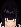
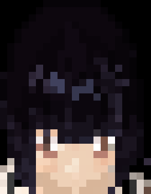
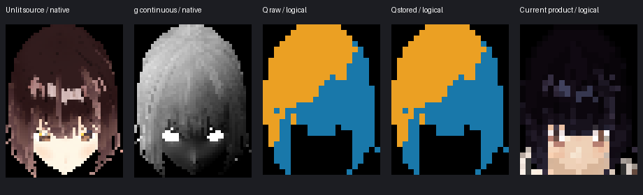
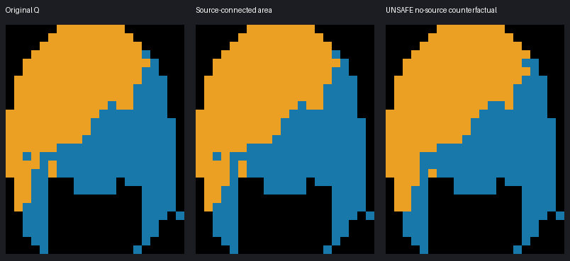

면적 후보 미채택. 실제 제품·이미지·팔레트에 적용하지 않았습니다.
원본 제품의 같은 sourceId: capture67-20261101T052807007Z / frame94. 새 Unity 호출·Play·캡처 0회. 아래 청록/주황은 단계 ID를 보는 진단색이며 새 머리 팔레트가 아닙니다.
현재 제품 원배율 / nearest12:




가운데 후보는 두 셀의 면적 판정을 바꾸지만 연결 영역 7개·4연결 단독 4개·공유 경계 46개가 유지됩니다. 고정 참조 위치 오차는 줄었지만 접선 오차가 한 참조에서 증가하여 채택하지 않았습니다. 오른쪽은 실제 표면을 구분하지 않은 실패 대조군입니다. 단독 셀 수 감소가 올바른 특징 보존을 뜻하지 않습니다.
| 참조 대각선 | 참조 위치 RMSE(px) | 접선 오차 |
|---|---|---|
| 0 | 0.382867 → 0.343831 | 0.238490 → 0.264986 |
| 1 | 0.384595 → 0.351127 | 0.393901 → 0.383755 |
참조는 저장 native g의 보간 추정입니다. 참조 호 길이를 고정해 비교했으며 전체 연속 조명/곡률의 정답이 아닙니다.
| 논리 좌표(y-down) | g | 근거 | 가림 무시 Q / 표면 제한 Q |
|---|---|---|---|
| [225, 59] | 0.03043392486870289 | silhouette/gap: no same-domain cardinal neighbour | 0 / 0 |
| [230, 55] | 0.2505282163619995 | silhouette/gap: no same-domain cardinal neighbour | 0 / 0 |
| [212, 48] | 0.4996219873428345 | internal point classification near threshold; visible source surfaces differ | 1 / 0 |
| [226, 36] | 0.48558294773101807 | silhouette-adjacent; different visible source surfaces | 1 / 0 |
| 좌표 | Q | 밝음 면적 하한 | 미확인 면적 |
|---|---|---|---|
| [213, 51] | 0→1 | 0.609501 | 0.256909 |
| [213, 50] | 0→1 | 0.711969 | 0.257241 |

원본의 밝은 무늬가 있어도 이 source의 64 coarse/fine 영역은 각각 1개였습니다. 불확실 경계 11,652개는 맵에 남지만 기존 contour 계층에는 없었습니다. 69는 이 증거를 별도의 soft contour로 연결합니다. 3,973개 조각을 실제 특징 ID나 강제 경계로 승격하지 않습니다. 완성된 명암 덩어리/특징 곡선은 여전히 미구현입니다.
EyeFeature348.compute:217/222는 후단 UV.z에 primitive provenance를 쓸 수 있습니다. 9개 머리 셀의 이 값을 Q로 읽으면 가짜 분할이 생깁니다. schema69는 shade-class의 Q를 명시적으로 사용하며 post-eye UV를 Q 입력으로 거부합니다. 이는 분석 계약 수정이며 제품 RGB 오류를 확정한 것이 아닙니다.
눈 feature/count 기록은 누락됐고 direct-host 관찰기 패치는 미적용입니다. 눈의 실제 공동 배치·가림·blink 검증에는 해당 버퍼를 포함하는 별도 승인 캡처가 필요합니다. 머리 특징/soft 곡선의 해석과 투영 개선은 현재 저장 자료로 계속할 수 있습니다. 시간 안정성·전체 미감·전체 continuous coverage는 검증하지 않았습니다. 경계 보간의 접선/위치 계약을 만족하지 못한 후보를 출력에 적용하지 않았습니다.
직접 host 참조 패치만으로 다음 캡처가 준비된 것은 아닙니다. 실제 featureCounts19 stride는48이고 records는 stride256·전체33,423,360bytes라 기존 읽기 함수가 거부합니다. 세 Vector4 / 열여섯 Vector4의 정확한 구조와 실제 ROI 행별 읽기가 필요합니다. 정확한 읽기 계획과 미검증 범위